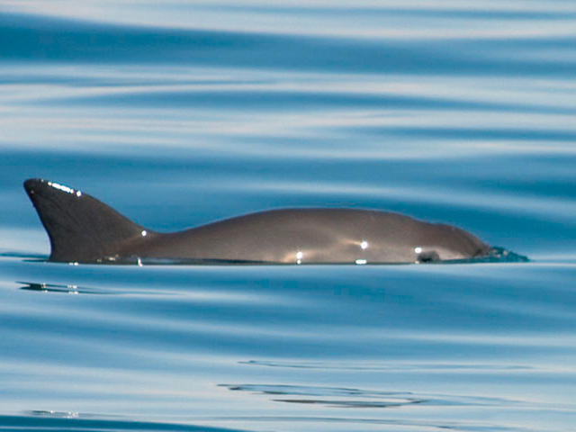

Click
here to donate to support oceanic wildlife
Species Information

Picture of a Vaquita swimming
Discovery
The Vaquita first became known after the discovery of a bleached skull on the beach north of Punta San Felipe in Baja California Norte, Mexico, on the 18 March 1950.
Within the same year an additional two skulls were discovered. These three skull specimens formed the basis of the description of a new species of porpoise, Phocoena sinus.
Habitat
The Vaquita lives and feeds in the shallow coastal waters, exclusively in the Gulf of California (Sea of Cortez), off Mexico. This area is just 2,235 square kilometres, however they may roam a bit further south along the Mexican coast. They prefer shallow water as their favourite food sources are bottom-dwelling fish (also known as "benthic"), but this does put them right in the danger zone for the illegal fishing nets used to catch another endangered species - the totoaba fish.
Appearance
Compared to other marine mammals they are tiny as they are four and a half feet long on average, only slightly longer than the average golden retriever. Vaquitas are torpedo-shaped marine mammals with a large dark ring around its eyes and dark patches on its lips that form a thin line from the mouth to the pectoral fins. With the way the lips are shaped, there is the illusion that the Vaquita is smilling. Vaquitas have a small, chunky, grey body with paler sides and a white belly. They have a relatively large dorsal fin and people think that this is to help them dissipate heat as they live in much warmer waters than other porpoises.
Newborns have a darker colouration and a wide gray fringe of colour that runs from the head to the flukes, passing through the dorsal and pectoral fins.